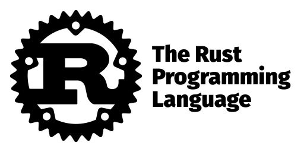
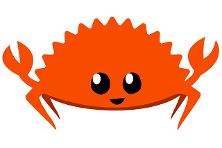

Introdução
A Programação Orientada a Objetos aumentou a produtividade em comparação a Programação Estruturada, principalmente devido a sua característica de abstração que permite um entendimento mais próximos à realidade humana. Entretanto programar com objetos envolve trabalhar com referências, que com o passar do tempo se provou criar uma série de problemas que antes não existiam. Podemos fazer uma analogia ao COBOL estruturado, quando que ocorreria um null pointer exception ou memory leak?
De acordo com engenheiros do Google e da Microsoft, 70% dos bugs são causados por erros ao manipular memória e objetos.
Nesse aspecto podemos dizer que Programação Estruturada é mais segura que a POO.
Por que Rust?
Rust surgiu para permitir programar através de vários paradigmas sem correr os riscos de manipular referências.
O inventor do conceito de null, Tony Hoare, hoje considera que esse foi o seu erro de 1 bilhão de dólares, devido ao custo de ter que prevê-lo, o custo do efeito negativo de quando ocorre erro e mais o custo para corrigi-lo. Rust é uma das poucas linguagens que conseguiu eliminar definitivamente o uso do null.
O compilador impede muitos bugs em tempo de compilação, inclusive concorrência entre threads. Isso permite que sejam criados programas extremamente robustos.
O compilador do Rust traz para si a responsabilidade de impedir erros, tirando o máximo possível das mãos do programador. Inclusive o controle de alocação de memória. Pelo fato do compilador resolver esta alocação em tempo de compilação, acaba sendo desnecessário haver Garbage Collection. Além disso, boa parte das variáveis são alocadas na memória stack, que é bem mais rápida que a memória heap. Outra característica do compilador é o zero-cost abstraction, onde a maneira que o programador estrutura o código não afeta o resultado final. Como resultado de tudo isso seus programas são extremamente rápidos.
Rust é uma linguagem inovadora, pois é a única que conseguiu conciliar alto desempenho com segurança.

Segundo engenheiros do Facebook, para adotar uma tecnologia não basta ser um pouco melhor, tem que ser muito melhor.
Existe um custo para aprender e outro custo contínuo para mantê-la. Engenheiros do Facebook consideram Rust uma linguagem "10 vezes" melhor do que outras: o custo de se detectar um bug em compilação é de várias ordens menor do que em execução ou em produção.
Rust é free e opensource. Gera código binário nativo para diversas plataformas. Não possui runtime nem virtual machine, ou seja, seu executável pode ser executado de maneira muito simples. Possui moderno gerenciador de pacotes e grande variedade de bibliotecas.
Rust é baixo nível?
Rust é uma linguagem multi-paradigma, permite trabalhar de forma estruturada, orientada a objetos e funcional. Existe um mito que Rust serve somente para baixo nível. Na verdade serve tanto para baixo nível quanto para alto nível, onde podemos afirmar que Rust é uma das linguagens mais completas que existe. Alguns consideram como alternativa ao C++ e outros como alternativa ao Go. Rust possui várias abstrações de alto nível, algumas inclusive que não existem em outras linguagens.

No Facebook inicialmente pensou-se que Rust seria adotado mais facilmente por programadores de C++, porém foram os programadores de Python que mais se identificaram com a linguagem.
Curva de aprendizado e complexidade
Por permitir fazer um monte de coisas é natural ter mais coisas para aprender. Podemos comparar ao COBOL, com uma curva de aprendizado semelhante.
O Facebook concluiu que seus programadores demoravam até dois meses para se sentirem produtivos.
Então não devemos nos frustrar em não aprender Rust em uma semana. E como em muitas linguagens, não precisamos aprender tudo para desenvolver algumas aplicações. Por exemplo, um programador Java não precisa dominar generics, interfaces, lambdas e threads para fazer alguns programas. Rust, por permitir vários paradigmas, pode fornecer algumas opções para contornarmos e alcançarmos o objetivo.
Criar software seguro envolve uma dedicação maior a curto prazo, mas ao longo prazo ganha-se tempo por gerar menos manutenção. Pense a construção de software como sendo uma construção de um prédio. É mais fácil ir empilhando somente tijolos do que fazer vigas e colunas. Porém se for só empilhar tijolos, assim que vai subindo os andares as coisas começam a ficar mais perigosas. Rust funciona mais ou menos assim: a construção é mais rigorosa, mas permite expandir de uma forma bem mais robusta.
Aprender a programar em Rust é como aprender a programar pela primeira vez. Muitos dos conceitos que aprendemos em outras linguagens não ajudarão, inclusive eventualmente teremos que desaprender algumas coisas.
Um fato que vale a pena reforçar: se você está fazendo algo errado em Rust o programa simplesmente não compila. Em outras linguagens não fazer certo muitas vezes é sinônimo de erro de execução. Em Rust isso dificilmente ocorre. Ou seja, se alguém tiver dificuldade em aprender Rust não significa que ele estará fazendo programas errados. Pode ser difícil programar em Rust, mas é muito fácil de programar certo em Rust.
Production ready
Rust começou a ser desenvolvida em 2010 e a versão 1.0 foi lançada em 2015. Hoje Rust é usado em produção por grandes empresas, tal como AWS, Microsoft, Google, Facebook, Apple, SAP, Oracle, etc.
Até a pouco tempo Rust era mantido pela Mozilla (desenvolvedora do Firefox), mas agora existe a Rust Foundation, que funciona independente, sendo patrocinada por: AWS (Amazon), Google, Facebook, Huawei, Microsoft e Mozilla.
Estas empresas, além de manter a fundação financeiramente, também mantém seus próprios times para trabalhar no compilador. Então são 6 grandes empresas pagando salários de programadores para trabalharem focados no Rust. Além destas, outras empresas menores fazem o mesmo e vários outros programadores contribuem de forma independente. Isso resulta que hoje há muito mais programadores trabalhando no Rust do que no Java (900 contra 200, consultando commits dos últimos meses).
A Rust Foundation foi criada somente no início de 2021, então o fruto do envolvimento das grandes empresas ainda está por aparecer, por isso há uma grande expectativa da linguagem crescer ainda mais em recursos, adoção e ecossistema.
Programar em Rust é muito legal
Ferris, mascote do Rust:

Por cinco anos consecutivos Rust é considerada a linguagem mais amada do mundo, segundo pesquisa do Stackoverflow. Apesar de ter uma curva de aprendizado maior que outras linguagens atuais, geralmente acaba conquistando o programador principalmente pela sua sintaxe moderna e característica de gerar programas mais seguros.
O comportamento do compilador é muito amigável, geralmente dá dicas do que podemos estar errando e como podemos resolver. Por exemplo, quando erramos o nome de uma variável ele sugere outras com nomes semelhantes.
A inferência de tipos é muito poderosa, graças ao seu Bidirectional Typechecking. Muitas vezes não precisamos declarar o tipo das variáveis e ficamos com a impressão que estamos programando em uma linguagem dinamicamente tipada, entretanto sem correr o risco de ter seus possível erros.
Por se relativamente nova, conseguiu se adaptar muito bem a editores modernos tal como VSCode, onde possui um language server com muitos recursos.
Ótima documentação e comunidade vibrante
Existe muita fonte de informação sobre Rust. Esses são os principais:
Aprender:
- Learn book oficial
- Take your first steps with Rust (oficial Microsoft)
- Tour of Rust
- Easy Rust
- Rust Gentle
- Artigo para programadores Java
- Rust Language Cheat Sheet
Algoritmos de exemplo:
Exercícios:
Fóruns e ajuda:
Novidades no mundo Rust:
Padrões sugeridos: